Easygoing
Open to different perspectives.
Hi, I’m Raininsun.
In this page, you will learn about ...
My interests, personality, journey and goals.
01 / LIFE OUTSIDE THE PROJECTS
I enjoy playing games. They sparked my curiosity about how games are built—and inspired me to start making my own.
Away from the screen, I like cycling without a fixed destination and exploring by different kinds of transport. These little trips help me relax and clear my head.
“People who cannot find time for recreation are sooner or later to find time for illness.”
02 / HOW I CONNECT & CREATE

Open to different perspectives.
Communicate always solve problems
Curious about new approaches.
03 / WHERE I AM & WHAT I’VE TRIED
A student with an interest in game-making technology, collaboration and trying new ideas.
I founded a club in Grade 9. It didn’t continue, but I’m planning to improve the idea and restart it in the second half of the school year.
Starting again is part of my journey.04 / WHAT I’M WORKING TOWARD
My near-term goal is to complete the TOEFL exam.
I want to explore the real-world landmarks behind the Wonders in Civilization VI and discover the places and stories that inspired them.